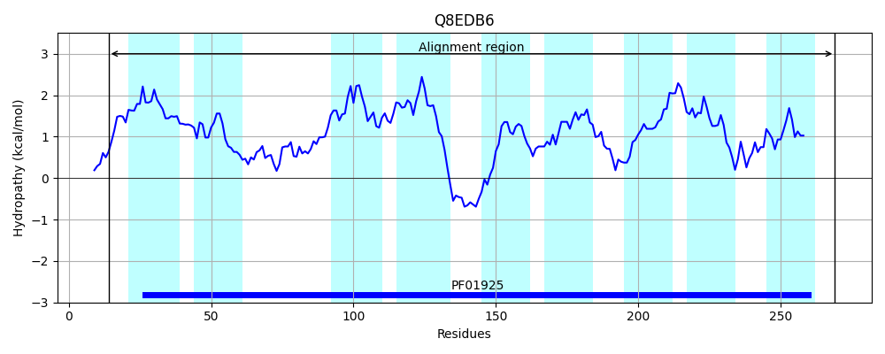

Hit Accession: Q8EDB6
Hit TCID: 2.A.102.3.4
Hit Description: gnl|BL_ORD_ID|16072 gnl|TC-DB|Q8EDB6|2.A.102.3.4 Probable membrane transporter protein OS=Shewanella oneidensis (strain MR-1) OX=211586 GN=yfcA PE=3 SV=2
Mach Len: 264
e:0.000000
Query TMS Count : 8
Hit TMS Count: 9
TMS-Overlap Score: 6.450000
Predicted Substrates:CHEBI:5460;glycine
BLAST Alignment:
Score: 411 , Bit scores: 162 bits, E-value: 2.8e-49, Alignment length: 264, Percentage identity: 37
Query: 1 MDLNLTMIIIIILFG--FIAAFIDSVVGGGGLISTPALLAIGLPPSVALGTNKLASSFGSLTSTIKFIRSGKVDLYVVAKLFGFVFLASACGAYIATMVPSQILK---PLIIIALSSVFIFT--LLKKDWGNTRTFTQFTFKKAIIFAALFILIGFYDGFVGGGTGSF--MLFVLLVFGFDFLSAAGNAKVLNFASNIGALVLFMVLGQVDYVIGLIMAISMIAGSYAGAHFAIKQGVGYVKVLFIIITAILILKNAFDYIQQF 255
M+ LT+ + +LFG +A FIDS+ GGGGL++ PAL+ GLPP+VALGTNKL + GS +++ F+R G VDL V F+ +A G + +V ++IL+ P +I+A+ F+F+ + ++D T T F F A + +G YDGF G GTGSF + FV L GF A +AKVLNF++NI +L+ F + G+V +++GL+M G+ G+ + +G +K L + ++ + LK Q F
Sbjct: 14 MEFELTLQVAALLFGVAMVAGFIDSIAGGGGLLTIPALMWAGLPPAVALGTNKLQACGGSFFASLYFVRKGLVDLKTVKLALFCAFIGAALGTVLVQLVDTKILELVLPFLILAIGCYFLFSKKVSEEDRHQVLTPTVFAFTAA-------LGVGLYDGFFGPGTGSFFALAFVTLA-GFGLAKATAHAKVLNFSTNIASLIFFALGGKVIWLLGLVMLAGQAIGATLGSRLVVTKGTKIIKPLVVTMSLAMSLKLLASQYQLF 269 | Protein Hydropathy Plots: |
|---|
|  |
Pairwise Alignment-Hydropathy Plot:
|
|---|
|